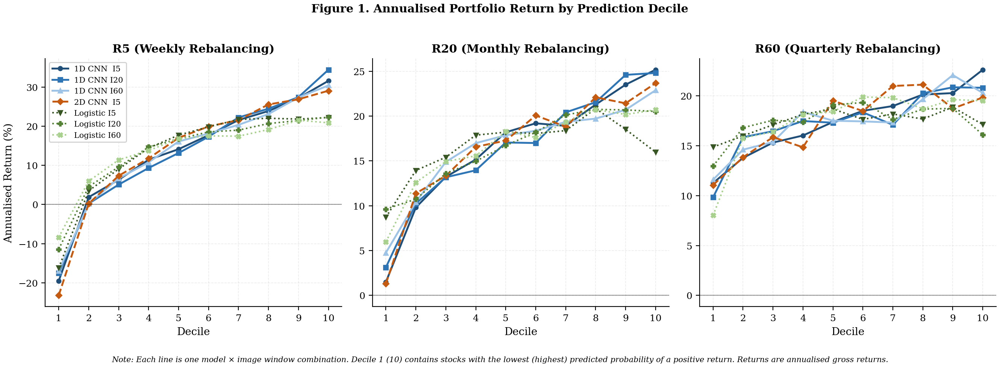
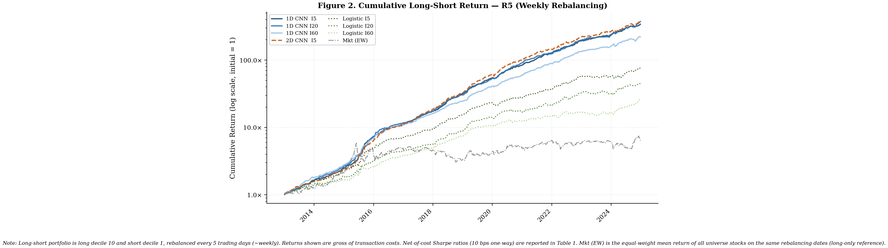
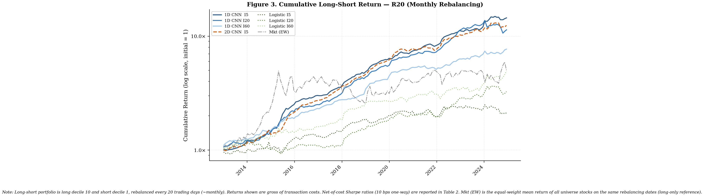
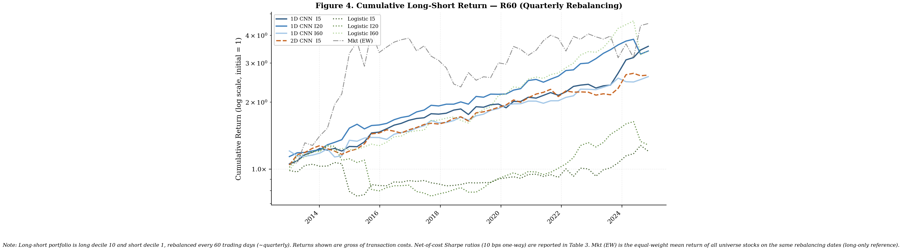

Jiang, Kelly & Xiu (2023) demonstrate that convolutional neural networks (CNNs) trained on stock price chart images generate powerful out-of-sample return predictions in U.S. equities, substantially outperforming classical momentum and short-term reversal signals. Their key insight is that CNNs learn visual price patterns from OHLC charts that linear models cannot easily capture.
This project extends the same framework to China's A-share market, where conditions for chart-pattern profitability may be even more favourable. Chinese markets feature a predominantly retail investor base prone to technical trading, daily price limits (±10%) that create predictable return clustering, and structural information inefficiencies that U.S. markets largely lack. Whether image-based predictability extends to a less informationally efficient market is an open empirical question.
The prediction task is binary classification. Given a stock's price chart image over the past I days (I ∈ {5, 20, 60}), models predict whether the subsequent R-day return (R ∈ {5, 20, 60}) is positive or negative (denoted Ix/Ry). The primary model is a 1D CNN applied to image-scaled time-series features across all nine specifications. A 2D CNN (the original Jiang, Kelly & Xiu (2023) architecture) is trained on I5 only as a computational reference point, and logistic regression serves as the linear baseline throughout.
📄 Full paper (PDF)Universe: all China A-shares with at least 180 days of listing history, sourced from CSMAR. The modelling dataset comprises ~9.6 million stock-date observations — a chart image and 1D feature array is constructed for every stock on every trading day, and the CNN generates a P(up) signal for each. Portfolio evaluation uses only out-of-sample predictions (2013–2024) on rebalancing dates, yielding ~1.2 million stock-week observations for the R5 (weekly) strategy: the reduction from 9.6 million reflects both the 5-day rebalancing interval and the exclusion of all training-period data from portfolio construction. Stocks hitting the upper daily price limit (LimitStatus = 1) on the prediction date are excluded from portfolio entry, consistent with A-share market microstructure.
Rolling training windows expand from 2005 to cover each subsequent test block: 2005–2012 → test 2013–2015 | 2005–2015 → test 2016–2018 | 2005–2018 → test 2019–2021 | 2005–2021 → test 2022–2024. All models are retrained on GPU for each window with a 70/30 internal train/validation split.
Chart images are constructed following Jiang, Kelly & Xiu (2023) Section I exactly, ensuring direct comparability with the U.S. results. The critical design choice is image-scale normalisation: all prices within a window are rescaled so that max(high) = 1 and min(low) = 0, making the CNN invariant to price level and sensitive only to pattern shape.
1D CNN (primary model)
Input: the six image-scaled time-series (open, high, low, close, MA, volume) stored as float32 arrays.
1D convolutional filters slide along the time dimension only, capturing sequential price patterns
without assuming 2D spatial structure. Trained on GPU across all nine Ix/Ry specifications.
Fully connected output layer with 50% dropout and softmax activation producing P(up).
Early stopping with patience = 3 epochs.
2D CNN (computational reference, I5 only)
The original Jiang, Kelly & Xiu (2023) architecture: black-and-white OHLC chart images fed into 2–4
stacked convolutional blocks (5×3 kernel → Leaky ReLU → 2×1 max-pool), doubling filters per layer
(64 → 128 → 256 → 512). Due to the substantially higher computational cost of processing full image
inputs at scale, the 2D CNN is trained and evaluated on the I5 specification only, serving as a reference
point against the 1D CNN on the same window.
Logistic Regression (linear baseline)
L2 regularisation (C = 1.0), saga solver, balanced class labels.
Applied to the same image-scaled 1D feature vectors as the 1D CNN. Quantifies how much of the predictive
gain comes from non-linearity versus the image-scale normalisation scheme alone.
Portfolio construction: stocks are ranked by P(up) each rebalancing date, sorted into deciles D1 (lowest) through D10 (highest), and held equal-weighted. The long-short portfolio is long D10 and short D1. Statistical inference uses Newey-West t-statistics with 4 lags to correct for serial correlation. Transaction costs follow Frazzini, Israel & Moskowitz (2018): 10 bps one-way, flat across all stocks. Annualised cost drag: ~10.1% for R5, ~2.5% for R20, ~0.8% for R60.
| Strategy | D1 | D5 | D10 | L/S Gross | L/S Net | SR Gross | SR Net | t-stat |
|---|---|---|---|---|---|---|---|---|
| 1D CNN I5 | −19.5% | +14.1% | +31.6% | 51.1% | 31.0% | 5.41 | 3.28 | [14.87] |
| 1D CNN I20 | −17.6% | +13.2% | +34.4% | 52.0% | 31.8% | 5.28 | 3.23 | [16.19] |
| 1D CNN I60 | −17.0% | +16.1% | +30.4% | 47.4% | 27.2% | 4.69 | 2.69 | [14.73] |
| 2D CNN I5 | −23.2% | +17.0% | +29.1% | 52.3% | 32.1% | 4.85 | 2.98 | [14.90] |
| Logistic I5 | −16.2% | +17.7% | +22.2% | 38.4% | 18.2% | 2.97 | 1.41 | [9.90] |
| Logistic I20 | −11.5% | +16.8% | +22.3% | 33.8% | 13.6% | 2.76 | 1.11 | [9.06] |
| Logistic I60 | −8.4% | +16.8% | +20.9% | 29.2% | 9.1% | 2.51 | 0.78 | [8.01] |
| Strategy | D1 | D10 | L/S Gross | L/S Net | SR Gross | SR Net | t-stat |
|---|---|---|---|---|---|---|---|
| 1D CNN I5 | +1.5% | +25.2% | 23.7% | 18.7% | 2.57 | 2.02 | [6.87] |
| 2D CNN I5 | +1.3% | +23.7% | 22.4% | 17.4% | 2.38 | 1.85 | [6.60] |
| 1D CNN I20 | +3.1% | +24.8% | 21.7% | 16.7% | 2.11 | 1.62 | [6.36] |
| 1D CNN I60 | +4.8% | +22.9% | 18.1% | 13.1% | 2.01 | 1.45 | [6.71] |
| Logistic I60 | +6.0% | +20.7% | 14.7% | 9.7% | 1.12 | 0.74 | [4.47] |
| Logistic I5 | +8.7% | +16.0% | 7.3% | 2.2% | 0.59 | 0.18 | [2.06] |
| Strategy | D1 | D10 | L/S Gross | L/S Net | SR Gross | SR Net | t-stat |
|---|---|---|---|---|---|---|---|
| 1D CNN I5 | +11.3% | +22.6% | 11.4% | 9.7% | 1.42 | 1.21 | [4.47] |
| 1D CNN I20 | +9.8% | +20.8% | 11.0% | 9.3% | 1.30 | 1.10 | [5.23] |
| 2D CNN I5 | +11.1% | +19.9% | 8.8% | 7.1% | 1.05 | 0.85 | [3.86] |
| 1D CNN I60 | +11.6% | +20.3% | 8.7% | 7.0% | 0.93 | 0.75 | [5.13] |
| Logistic I60 | +8.0% | +19.5% | 11.5% | 9.8% | 0.91 | 0.77 | [3.48] |



